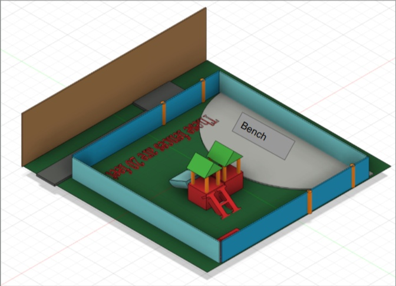
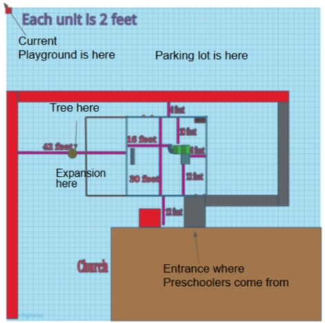
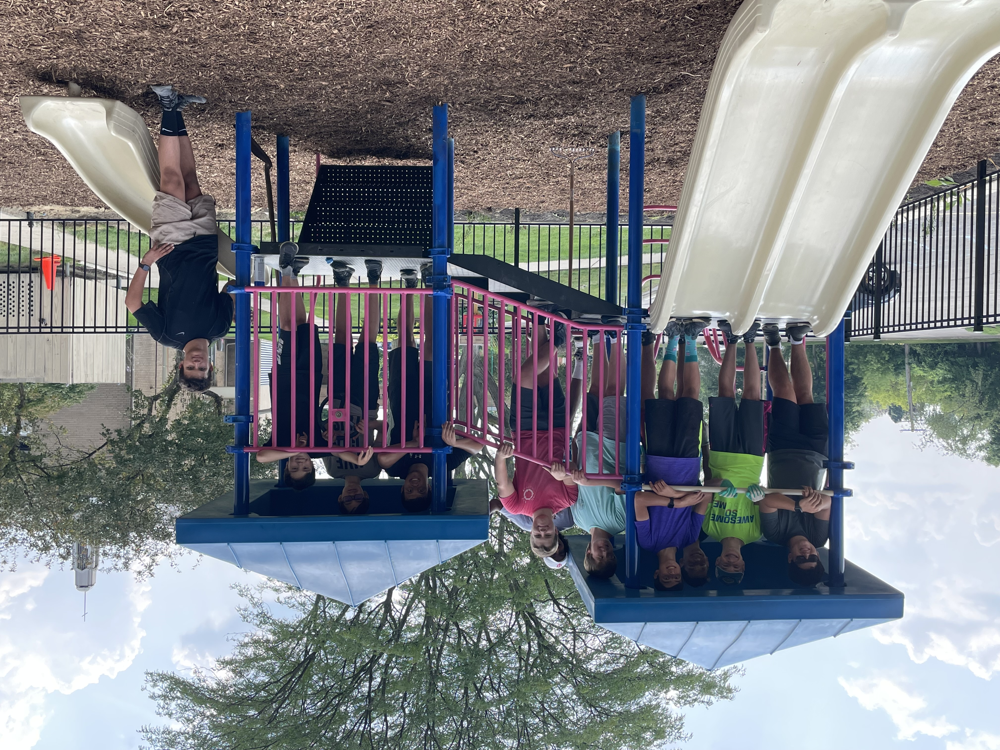

The preschool at my church had a playground problem - it was across a parking lot from the building, hidden in a ditch near a storage shed, and difficult to safely move children between. At 14, I decided my Eagle Scout project would fix that. I proposed relocating and fully renovating the playground to a better position on the property, bringing it closer to the school and out of the ditch entirely.
The project ran from August 2020 through August 2021 - a full year from first proposal to ribbon cutting, completing just before the new school year began. What started as a community service requirement became one of the most formative project management experiences of my life, and the first time I realized I could take a large, open-ended problem and drive it to a finished outcome.
Before approaching anyone for money or approval, I built scaled CAD models of several proposed locations on the church property. Having accurate layouts made the presentations concrete — trustees could see exactly where the playground would sit, how it would relate to the building entrance, and what the grading implications were. I presented at two separate trustee meetings, refining the proposal between sessions based on their feedback, and ultimately secured $20,000 from the church trustees.


Scaled CAD model of the proposed site (left) used in trustee presentations (right).
To reach the congregation more broadly, I produced a video explaining the vision for the project and played it during a church service. That brought in an additional $7,500 in donations — bringing the total to $27,500. The bulk of the budget went toward the contractor handling ground regrading, retaining wall construction, and fencing. My team handled everything else: tearing down the old playground, cleaning and repainting all the equipment, and reassembling it in the new location. We also built new additions including a folding sandbox designed to keep animals out when not in use, and planted greenery along the fence line.

Preparing the concrete for the new footers, and starting to add in the foot of mulch.
Construction ran through July and August 2021, and wasn't without surprises. Weather delays pushed the schedule. The old footers had roughly twice the concrete originally expected - leading to having to ask the contractor to use his equipment to help pull them out. A gas main was discovered about four inches below the surface during excavation, requiring an unplanned work stoppage and coordination with the utility company. And some of my early measurements were off, requiring adjustments mid-build. Each issue was solvable, but none were in the plan, and managing them in real time — with contractors, volunteers, and a deadline — was a formative experience in what it actually takes to deliver a project.


Teardown, repainting, and the custom folding sandbox — all done by hand with the project team.
The playground opened in August 2021, on schedule and within budget, and has been in use by the preschool ever since. The relocation solved the original problem completely — kids no longer cross a parking lot to reach it, and the space feels like part of the building rather than an afterthought tucked behind a shed.

The completed playground in its new location, ready for the 2021 school year.
More than the physical result, this project taught me what it means to actually lead something — not just to have a good idea, but to get buy-in, manage money, coordinate people, and adapt when things go sideways. The gas main, the extra concrete, the measurement mistakes — none of those were failures, they were the project. That's something I've carried into every team and build since.